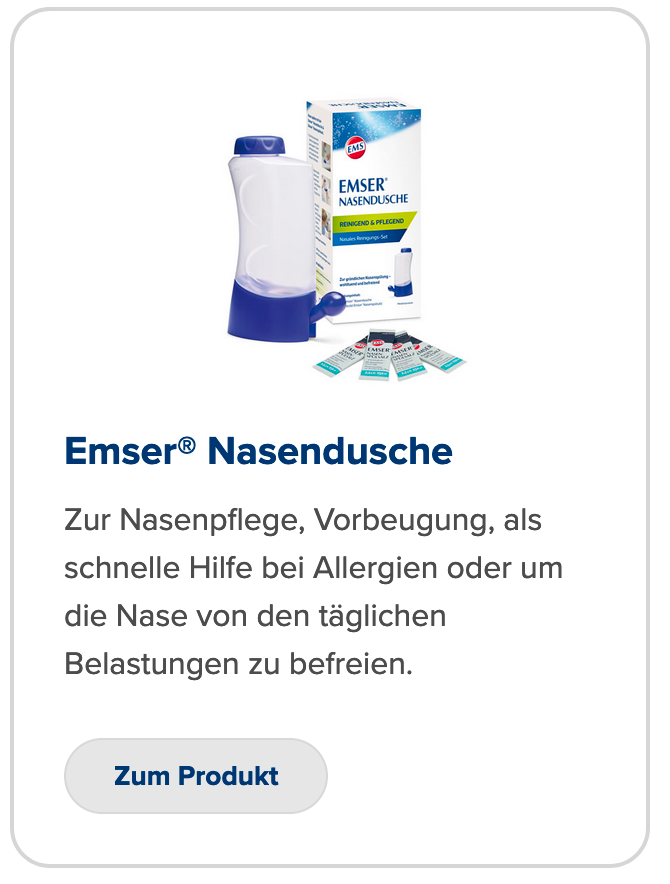

Self Care (Vorschläge) :

Zurück
Weiter
Als natürliche Alternative zur Linderung der Allergiesymptome haben sich Nasenspülungen mit der Emser Nasendusche und Emser Nasenspülsalz bewährt: Pollen, Stäube und körpereigene Botenstoffe werden einfach aus der Nase gespült. Dadurch verkürzt sich die Einwirkzeit der Allergene. Die Nase wird wieder angenehm frei.

Pollen, Staub und körpereigene
Botenstoffe einfach wegspülen